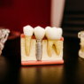

- 양치기 치과
- surch image
- likeshare
- It is a Yangchigee dentist located in Gangnam-gu, Seoul.
09:00 - 22:00
With excellent medical staff and state-of-the-art equipment, we will endeavor to impress everyone who visits the Yangchigee dentistry.
양치기로 양양길 88-1, 양치기 치과
- 